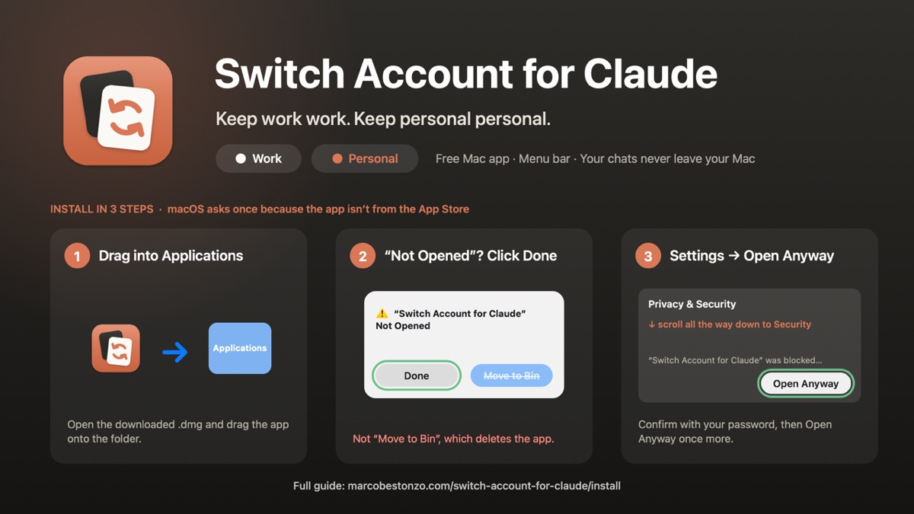

Use two Claude accounts on your Mac, without logging out
The Claude desktop app keeps one account signed in at a time. Switch Account for Claude swaps it between two accounts, like a work one and a personal one, in one click. Both stay signed in.

What it does
- One click to switch. Claude quits, swaps to your other account and reopens by itself.
- Both accounts stay signed in. Each keeps its own login, chats and settings.
- Always know where you are. A dot in the menu bar shows the active account: white for Work, orange for Personal.
- Work and personal never mix. Only one account is open at a time, so nothing gets pasted into the wrong chat.
- Updates itself. New versions install automatically and are signed, so only genuine updates are accepted.
Never reads your Claude logins or tokens
It only moves Claude’s own data folder on your Mac (~/Library/Application Support/Claude), and only goes online to check marcobestonzo.com for its own updates. Your chats and sessions stay where Claude keeps them, encrypted by Claude.
Ways to use two Claude accounts on one Mac
| Switching | Both signed in | Effort | |
|---|---|---|---|
| Log out and back in | Every time, with email codes | No | High |
| Desktop app + a browser profile | Two different apps | Yes | Medium, and features differ |
| Switch Account for Claude | One click in the menu bar | Yes | Low |
Install in 3 steps
The app isn’t from the App Store, so macOS asks once the first time: drag it into Applications, click Done on the “Not Opened” message, then Open Anyway in System Settings → Privacy & Security. The illustrated install guide shows exactly where to click.
Questions
Can the Claude desktop app be signed in to two accounts at once?
Not by itself: it keeps one account signed in at a time. Switch Account for Claude keeps a separate copy of Claude’s data for each account and swaps them, so both stay signed in and switching takes one click.
How do I switch between a work and a personal Claude account?
Install the app, open it once and sign in to your second account when Claude reopens. After that, click the dot in the menu bar and choose Switch.
Does it read my password or login tokens?
No. It never reads your Claude logins or tokens. It only moves folders on your Mac.
Does it work with Claude Code in the terminal?
It switches the Claude desktop app, including its Code tab. Claude Code in the terminal keeps its own login.
How many accounts does it support?
Two for now, called Work and Personal. It’s a beta, so feedback on what you need is welcome.
Is it from Anthropic?
No. It’s an independent tool, not made by, affiliated with, or endorsed by Anthropic.